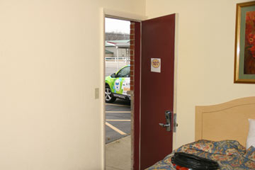
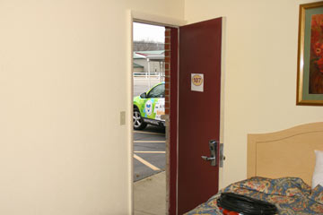
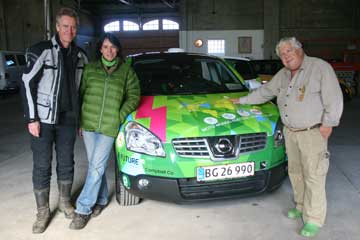
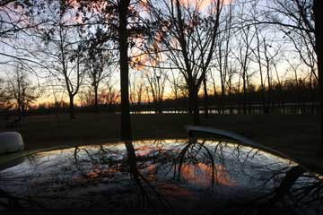
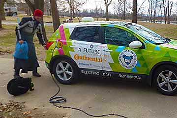
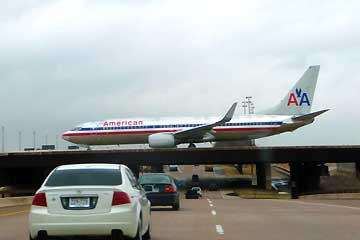
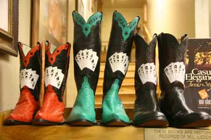

The farms in Indiana seem to be in better shape than down South. White-painted wooden houses, hundred years old, full of spires, verandas and porches line the main street in the small towns we pass through. It gets dark early and we move through an invisible landscape of shadows and distant lights. We listen to ghost-stories on the CD-player and it takes some time before we notice the flashing blue lights that keep trailing us. I stop the car and Nina jumps out. A police officer walks up to the car and scans inside with his torch light. Passers-by have called the police because we were driving slowly and he wants to check whether we are intoxicated. Electric car? Save power? Then he understands and wish us safe travels!
Hjalte


Teresa gave us a whirl-wind tour through St Louis. The city hosted the World Fair in 1904, 106 years before Shanghai. At that time the automobile was a great novelty. We visited a beautiful glass-building with palms that has been preserved from 1904, now used for weddings. Eero Sarinen's gigantic arch at the Mississippi made a huge impact on us. Bold and clear. Testimony to optimistic and proud times. At the MOTO-museum we saw a great collection of rare motorcycles including the world's only wooden MC! Before we continued we tried Teresa and Mark's Tesla electric sports car. Don't be shy, Teresa said, the pedal to the metal! Stunning! 200 KW do pull forward! Then we had to say goodbye to our new friends and entered Illinois.
Hjalte


The sun rose over the mighty Mississippi and flooded the big room on top of Jack Rickard's house in a pink light. We had a glorious view of the new bridge. Coal barges came steaming up - and down - the river. After a brisk walk followed by a big cup of hot coffee and long EV talk in Jack Rickard's kitchen we drove over to his garage. But not before Green Car had a wash and got back its shine. Then the TV-filming begun where Green Car was presented. You can see us at <EVTV.ME>. It was really hard to say goodbye to Jack, but we had to press on towards Detroit. We cannot be late and drive each day adding three hours of daily lunch-time charging. To save power we have not yet turned on the heater and we were quite frozen when we reached Teresa and Mark. They lived in a beautiful house in St. Louis with a Tesla in the garage - and a high-power outlet for Green Car, which the lovely people had installed just because we were passing by! They were both doctors in their 40s and had also a couple of fast Audis and a Cessna plane. We spent a long and entertaining evening with them and felt quite at home.
Nina and Hjalte

Night had fallen before we reached Cape Girardeau, a little town at the Mississippi in Missouri. The road got small and dark and we almost thought we had lost our way when we suddenly saw a large garage, where Jack Rickard welcomed us. Inside was light, warmth and a lot of space. In his TV-studio, that also served as work-shop a row of beautiful classic Porches were lined up all converted to electric drive by Jack. Every week Jack hosts a TV-program on the net on the world of electric propulsion and how to convert cars to electric drive. See www.EVTV.ME He was extremely knowledgeable on battery technology and how to control them - he had burned, smashed and mistreated them - and on the commercial prospects of electric cars - good on the long run. We hooked up Green Car next to the Porches and then Jack took us home to a big Sunday-family dinner in his fairytale house right at the Mississippi, built 130 years ago by a Mississippi steam-boat captain. Jack's wife, his daughter and grandson and his mother were there. We all were seated around a large round table and served a wonderful meal prepared by Jack's wife. USA cannot live without oil, Jack said, cheap oil and cheap transport underpin all parts of our lives. Hike the price to European levels and the American economy will break down. He predicted dramatic upheavals in the near future.
Nina and Hjalte

The temperature fell from 23 C yesterday to only 2 C this morning. No traces of fireworks anywhere, and we had also heard nothing all night. A bit sleepy I drove the car to Newport in Arkansas. Until now we had not turned on the heater in the car. So when we went shopping in Walmart I found a pair of big jogging-pants to wear on top of my jeans. All the small diners were closed, so for the first time we went to chain restaurant. We chose buffet and it was very cheap, cheaper than cooking at home. Most Americans do not keep food in their kitchens at all, only snacks, soft drinks and ice. The family members seldom eat at the same time, so logically in many homes the dinning table is on the way out. To cook food in your home seems to be for the wealthy.
Nina


As I left the motel the brake did not work. We had this problem before at low speed and knew what to do: a hard knock on a small relay. This time Hjalte took time for a proper repair and put in a new relay and Green Car was braking again. In the afternoon we cruised in vain for 240 volt in Texarkana and met some young guys at a tire-shop fitting over-size wheels and low hanging jeans. Quite a car! At the KOA-kamp outside town we ran into a very friendly manager and the good 50 amp RV-power. Electricity is cheap in USA. Three hours added up to $ 1,4. It was now dark and chased by a whole phalanx of huge, brightly lit trucks we rolled into Arkansas.

Ida and Elliot waved goodbye in Dallas airport. Nina and I have enjoyed every minute with them in Green Car. On the British Virgin Islands waits father Hans and beach holiday. We will see them again in New York at the end of the month. In Richardson, a Dallas suburb, Paul from the Electro Auto Association was waiting for us. We got Green Car plugged in in his garage after some trying. The EV-people are active here in Dallas and several members have constructed their own EVs. Paul has bought a Leaf, the first Nissan EV, and he is no 6 on the list for delivery at the local auto dealer. Paul explains that for many EV-people a major motive for going electric is to cut dependency on oil (from the Middle East). We went out dinning with Paul and he invited us to stay the night, but we had to press on towards Detroit and said goodbye to yet another helpful and sympathetic EV-friend.

The idea was to go shopping before Ida's departure tomorrow. In Fort Worth we visited the historic Stock-yards, now a row of tourist-shops with cowboy-gear. A lot of fine things and a lot of junk. But we did not buy anything, it was too expensive. One shop had crazy boots costing 10.000 dollars. We had lunch in a cowboy-grill and spent the afternoon in two big art-museums. They were crammed with people eager to kill a day of the holiday with culture. Not much else was going on in the town and it was one of the most busy days in Kimberley Art Museum and Fort Worth Museum of Modern Art. Elliot was riding on Hjalte's shoulders and as always one big smile.
Nina


In bright sunshine we took a walk for a couple of hours to give time to charge Green Car. Several cars stopped and asked friendly if we were OK? It was not normal to walk on your legs. There are wheels under people here from cradle to grave. We visited a small graveyard, with the graves beautifully decorated by plastic flowers. On the way back we began seeing the debris dumped on the roadside, where few humans put their feet. We found an old rusty horseshoe, a saw-blade, run-over armadillos, dead turtles, scraps of car-lights, tires and mirrors, two spanners, a veterinary syringe, mascara, MacDonald ketchup, nuts and bolts, a lot of cigarette butts and broken booze bottles, the lid of Copenhagen snuff, a price tag from a shirt, a ball pen and a license plate. We took a picture and drove the last miles to Fort Worth/Dallas.
Nina